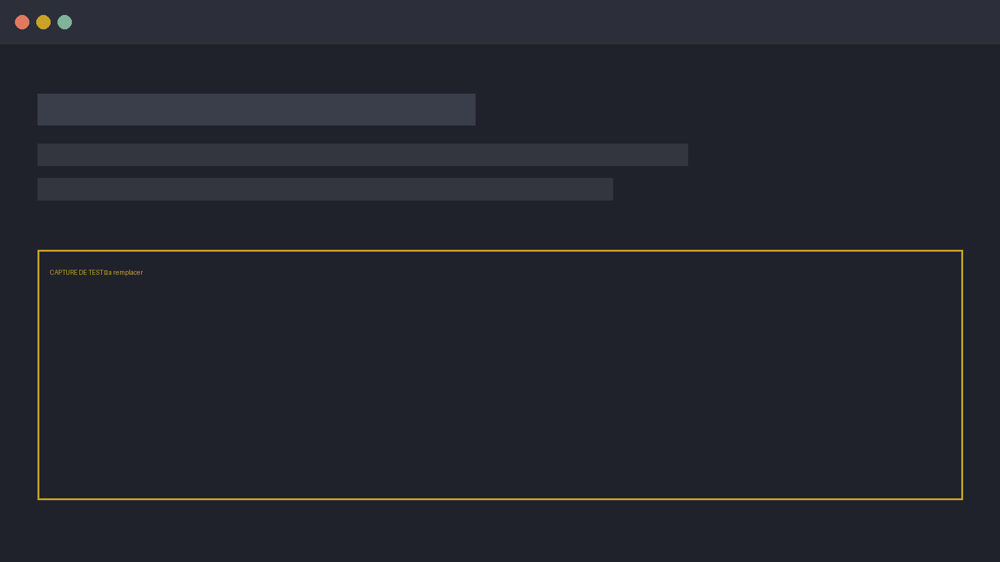

Projet principal
Une phrase, pas plus. À remplir.
Présentation finale de stage
Louis Brusset — date à confirmer
Contenu bouchon : cette version sert à valider la technique.
Avant de commencer
ou allez sur …
Sondage 1 · contenu bouchon
En une slide, promis
Une phrase, pas plus. À remplir.
Compagnons, automatisations, scripts. À remplir.
Un chiffre ou un avant/après. À remplir.
On passe vite : le cœur du sujet, c'est la suite.
Recommandation 1 / 3
« Résume ce document. »
Exemple long à écrire : rôle + audience + format + exemple.
Recommandation 2 / 3
Ajouter ici un exemple réel en 3 tours.
Recommandation 3 / 3
Ajouter un exemple d'erreur crédible repérée à temps.
Mini-jeu · contenu bouchon
Micro-masterclass
Qui il est, pour qui il travaille.
Les documents qu'il a sous la main.
La forme exacte de la réponse.
Ce qu'il ne doit jamais faire.
Le minimum viable pour que quelqu'un reparte et crée le sien.
Trois exemples concrets
Problème résolu · temps gagné · comment il est construit.
Problème résolu · temps gagné · comment il est construit.
Problème résolu · temps gagné · comment il est construit.

Sondage 2 · contenu bouchon
Pour finir
Questions ?
Et le gagnant est…
Bravo à tout le monde — et merci d'avoir joué le jeu.